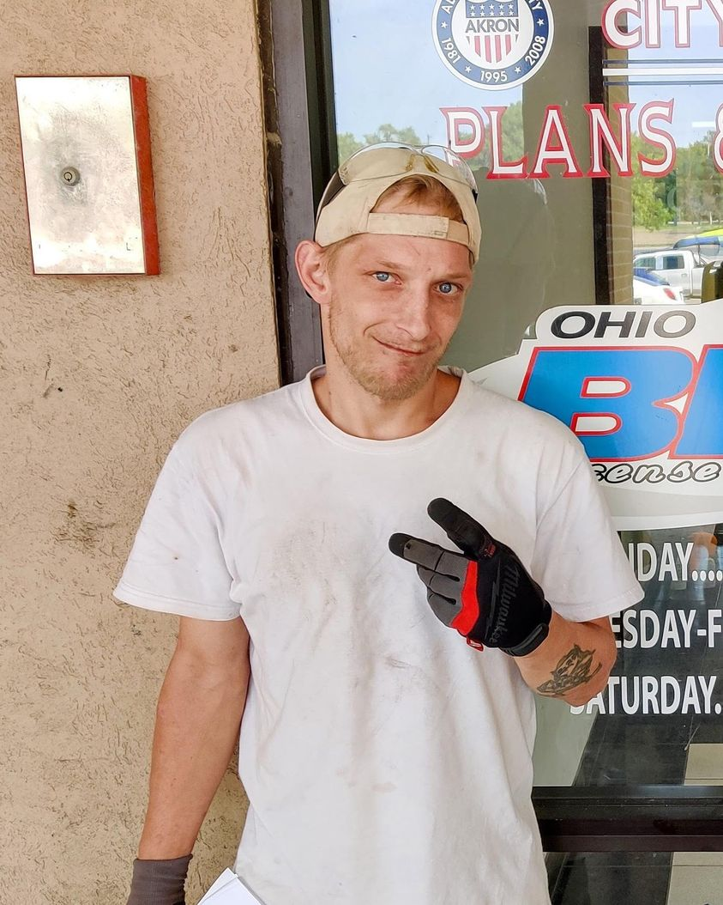

Timeline photos
This is Andrew. It was taken in August 2021. We just had gotten his ID.
The third tent community I created was originally just for him and Rob.
I bought Andrew a very large, pretty high quality tent.
I wanted to see what would happen if I just focused on 2 people. Could I transition them into housing and disability payments? (I believed both of them could have qualified for mental health disabilities. I have friends who get disability payments with probably less mental illness issues.)
I couldn’t do it. Both Rob and Andrew lost these IDs within a week.
They both refused to go to mental health evaluations because they both think the world is what is the problem. Not them. They both believe they have no mental health issues.
Both of these guys look like they have a karma where they have to pay a steep price for some wrong they have done to the universe. I’ve never seen the universe beat up on people more than I’ve see it beat up on Andrew and Rob.
Andrew died of an overdose on my watch in a plastic shed I bought from Sam’s Club that was on my property.
Place: Middlebury (41.071918, -81.488393)
Address: Middlebury, OH 44305